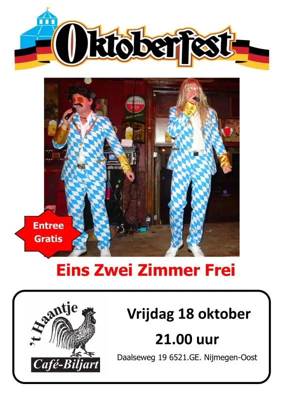
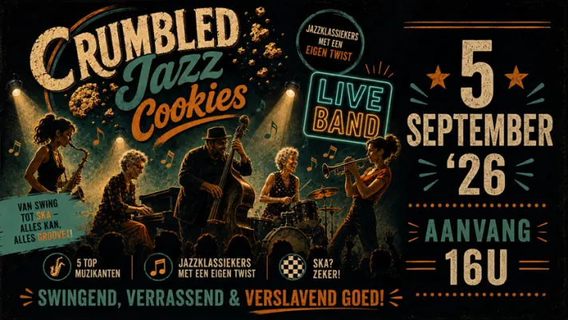

Evenementen bij Cafe 't Haantje
Daalseweg 19
Binnenkort
2nov UitgelichtFilosofisch Cafe bij Café ’t Haantje2 nov, 20.00 uurCafe 't Haantje
7nov
UitgelichtFilosofisch Cafe bij Café ’t Haantje2 nov, 20.00 uurCafe 't Haantje
7nov UitgelichtTroost van Oost 2026 met De Triesto’s7 nov, 21.00 uurCafe 't Haantje
14nov
UitgelichtTroost van Oost 2026 met De Triesto’s7 nov, 21.00 uurCafe 't Haantje
14nov UitgelichtPubquiz bij café ’t Haantje14 nov, 20.30 uurCafe 't Haantje
28nov
UitgelichtPubquiz bij café ’t Haantje14 nov, 20.30 uurCafe 't Haantje
28nov UitgelichtJohnny and the Rockets28 nov, 20.30 uurCafe 't Haantje
UitgelichtJohnny and the Rockets28 nov, 20.30 uurCafe 't Haantje
UitgelichtFilosofisch Cafe bij Café ’t Haantje2 nov, 20.00 uurCafe 't Haantje
7novUitgelichtTroost van Oost 2026 met De Triesto’s7 nov, 21.00 uurCafe 't Haantje
14novUitgelichtPubquiz bij café ’t Haantje14 nov, 20.30 uurCafe 't Haantje
28novUitgelichtJohnny and the Rockets28 nov, 20.30 uurCafe 't Haantje
Eerder bij Cafe 't Haantje
10oktUitgelichtPubquiz bij café ’t Haantje10 okt 2026Cafe 't Haantje
5oktUitgelichtFilosofisch Cafe bij Café ’t Haantje5 okt 2026Cafe 't Haantje
3okt UitgelichtOKTOBERFEST bij Café ’t Haantje3 okt 2026Cafe 't Haantje
5sep
UitgelichtOKTOBERFEST bij Café ’t Haantje3 okt 2026Cafe 't Haantje
5sep
UitgelichtPubquiz bij café ’t Haantje10 okt 2026Cafe 't Haantje
5oktUitgelichtFilosofisch Cafe bij Café ’t Haantje5 okt 2026Cafe 't Haantje
3okt
UitgelichtOktoberfest bij Cafe ’t Haantje3 okt 2026Cafe 't Haantje 3oktUitgelichtOKTOBERFEST bij Café ’t Haantje3 okt 2026Cafe 't Haantje
5sep
UitgelichtCrumbled Jazz Cookies bij Cafe ’t Haantje5 sep 2026Cafe 't Haantje